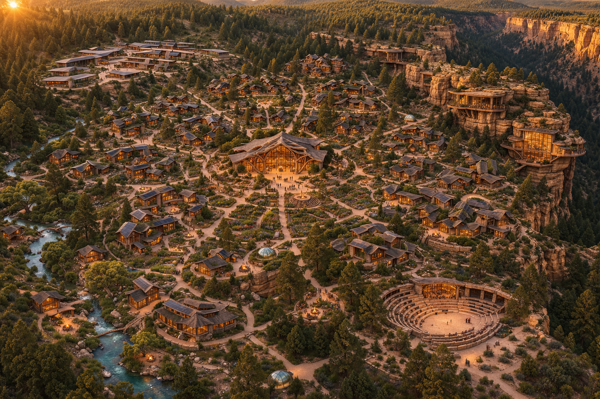
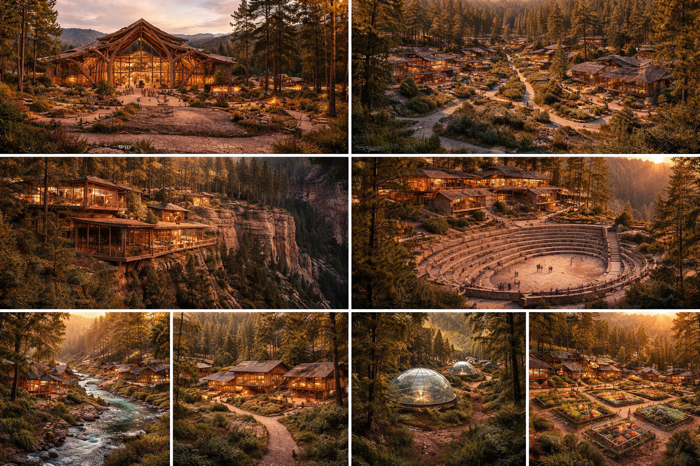

A Twomiah Campus
A self-sustaining campus. Not a shelter. Not a commune. A place built to prove what's possible when infrastructure serves people instead of profit.
HOME is a large-scale campus organized in concentric zones — each one serving a different purpose, all of them connected. At the center, community. At the edges, industry and housing. Underground, the infrastructure that makes it all invisible. No landlords. No gatekeepers. No expiration dates. A place where families live, people work, visitors spend, and every dollar circulates back into the mission.


HOME is built in rings. Each zone is designed for a specific function — from the social core to the industrial edge. Nothing is decorative. Everything earns its place.
The social and commercial heart of HOME. Restaurants, shops, gathering spaces, open plazas, and the kind of streetlife that makes a place feel alive. This is where residents, workers, and visitors overlap. The revenue center and the soul of the campus in one.
A neighborhood for families connected to the mission. Affordable housing tied to participation — not income thresholds or waiting lists. Real homes for people who are part of building something. Creek access, trails, shared green space, and neighbors who chose to be here.
Walk in. Get help. No questions asked. Meals, showers, laundry, case workers. Open 24 hours a day, 7 days a week, 365 days a year. No intake form. No appointment. No judgment. The front door to HOME for anyone who needs it.
Two programs that work together. One keeps a family housed near their child's hospital. The other keeps their life from falling apart back home.
A neighborhood reserved for families whose child is receiving treatment at a nearby hospital or medical center. Free housing. No application. No income requirement. No timeline.
The kitchen is stocked with real food. Laundry is on-site. WiFi works. There is space for kids to run. You stay as long as your child needs care. That is the only rule.
This is not a hotel room with a mini-fridge. This is a home — because the worst week of a family's life should not also be the week they sleep in a hospital chair, eat vending machine food, and try to explain to their other children why everything changed.
A fund — not a loan, not a repayment plan — that covers the family's bills back home while they are at The Stay.
Rent. Utilities. Car payment. Groceries for the siblings staying with grandma. The bills don't stop because your child is in the hospital. So the fund covers them. Directly. No means testing. No paperwork gauntlet. No "we'll get back to you in 6-8 weeks."
The goal is simple: when a family arrives at The Stay, they should be able to focus entirely on their child — not on whether they'll have a house to go back to. A bridge, not a burden. Deeply grantable. The kind of thing donors can see, feel, and point to.
The manufacturing and jobs center of HOME. Real jobs. Real wages. Training programs. Not a "workforce readiness" seminar — actual production lines, actual paychecks, actual skills that transfer anywhere.
The Plant sits on the outer edge of HOME, connected to the outside world through a dedicated perimeter truck entrance and logistics yard. The outside world's vehicles stop here. Everything moves underground from this point.
The surface of HOME never sees a delivery truck. No semis rolling past playgrounds. No diesel idle at intersections. The industrial economy powers the campus — but it stays invisible to the people who live here.
HOME is not a closed community. It is designed to attract visitors — and their dollars. Tours, restaurants, retail, experiences. The Commons is open to the public. The campus is a destination. Every visitor dollar circulates through the system and funds the mission.
The Commons hosts restaurants, shops, and experiences that draw visitors from the surrounding region. These aren't gift shops — they're real businesses operated by residents, generating real revenue that flows back into the campus.
Guided campus tours, seasonal events, conferences, and educational programs. HOME is proof of concept — and people will pay to see it. Every ticket, every meal, every purchase supports the infrastructure that keeps the doors open.
Retirement communities on the outer ring of HOME — not separated from the mission, woven into it. Residents don't just get amenities. They get purpose. Four community types, each with a different relationship to the campus core.
Homes woven directly into the Family & Friends neighborhood. Creek access, shared green space, a genuinely mixed community. Retirees live alongside young families, workers, and mission participants. No age-gated fences. No separation. This is for people who want to be in it.
Their own neighborhood bordering The Commons. Walkable to restaurants, shops, and gathering spaces. Connected to everything but distinct enough to feel like a neighborhood of its own. The best of both — community without compromise on quiet.
The most separation. A 55+ active adult community on the outer ring with its own pool, common areas, walking trails, and gathering spaces. Peaceful. Private. Still connected to The Commons by tram — but designed for people who want their space.
Premium homes built into the canyon cliff face. The most dramatic views in Arizona. A waiting list before the foundation is poured. These are the flagship residences — for people who want something that doesn't exist anywhere else. Every sale directly funds the mission.
Mix of purchase and lease. HOA fees fund campus operations. A portion of every sale goes directly to the mission. Fixed-income retirees can participate through condo options — because this should be accessible, not just aspirational.
Everything that makes a campus work — and everything that makes most campuses ugly — is underground at HOME. Utility tunnels, logistics corridors, deliveries, waste management, fiber, water, power. All of it buried. All of it accessible for maintenance. None of it visible.
Goods arrive at The Plant's perimeter dock and move underground to every zone on campus. Restaurants in The Commons get deliveries without a single truck on the surface. Residential neighborhoods never hear a backup beeper. The economy runs beneath the feet of the people it serves.
Power, water, sewer, fiber, and HVAC — all routed through maintainable utility tunnels. No overhead lines. No transformer boxes in yards. No manholes in the middle of paths. When something needs repair, a technician walks through a tunnel. The surface stays untouched.
The campus is large enough that bikes alone won't do it. Three systems work together so nobody ever needs a car on the surface. You choose how you move — the infrastructure supports all of it.
A fixed-route electric tram loops the entire campus. Stops at every neighborhood and The Commons. Every 10-15 minutes. Free for all residents. The backbone of movement at HOME — reliable, quiet, and always running. You never need to plan around it. It's just there.
Personal ownership option plus a shared station-based system like bike share. Wide paths throughout for cart and pedestrian coexistence. Groceries, kids, evening rides — the golf cart is the car of HOME. Familiar, flexible, and zero emissions on campus.
Station-based at every tram stop. Free for residents, small fee for visitors. For short trips, exercise, or when you just want to feel the air. The network of paths makes every destination accessible by two wheels.
Pod system connecting major zones underground. No tracks on the surface. No risk to children. Entrances are earth berms — gentle hills with native plants on top, well-lit ramps inside. You walk into a hill, not a subway station. Stops are integrated into each neighborhood as landscape features. Fast, invisible, and beautiful.
Wide paved paths for carts, bikes, scooters, and pedestrians together. The main arteries. Smooth, lit, and wide enough that a golf cart and a family walking never feel crowded.
Dedicated walking-only paths along the river and through the trees. No wheels. Just footsteps, water sounds, and shade. The places you go to think.
Natural dirt paths that form on their own over time. Leave them. They are the soul of the campus. Where people actually walk — not where a planner thought they should.
No cars inside the circle. Ever.
HOME doesn't need to be built all at once. It needs to be started. These are the steps — in order, without shortcuts.
Establish the nonprofit entity. Legal structure, board, bylaws. The foundation that holds the land, manages the fund, and ensures the mission outlives any one person.
Architects, civil engineers, water and land specialists, community designers, fund managers. Not consultants — the people who will build this and stay.
1,500-3,000 acres. Canyon cliff face. A perennial river. Wilderness on three sides. Central Arizona canyon country, Mogollon Rim region. The land is not a detail — it is the design. The cliff face becomes the Cliff Homes. The river becomes the walking paths. The wilderness becomes the boundary. The land tells HOME what to be.
Underground infrastructure first. Then The Commons and Always Open. Then housing. Then The Plant. The foundation before the finish.
The first residents move in. The first meal is served at Always Open. The first family arrives at The Stay. HOME becomes real the moment someone calls it that.
HOME is not a whitepaper. It's not a concept deck collecting dust. It is the thing we are building. If you want to be part of it — in any capacity — reach out.